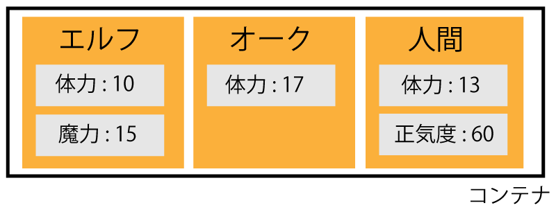
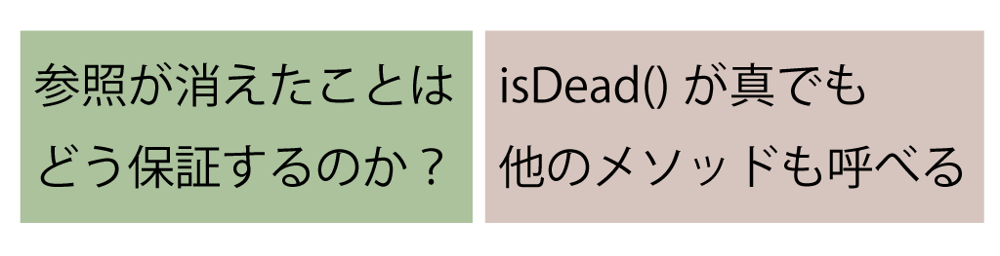

Haskellでの合成可能なオブジェクトの構成とその応用
木下郁章
山本和彦(IIJ-II)
2015/03/05
背景
- Haskellでゲームプログラミングをしたい
- ゲームプログラミングでは、内部構造の異なるデータを操作によって共通の型によって扱いたい場面がある

Haskellではそのような共通化が苦手
共通化するには
研究の目的
- クラスベースオブジェクト指向言語なら、
- 同じ操作を持つオブジェクトは同じ型で扱える
- サブクラスの定義によってデータを増やせる
- Haskellで、操作によって共通化でき、データが拡張できる構造を作る
アイデア
- 操作の型によってのみ決まるデータ型を作る
- 同じ操作を持つならば同じ型になる
- 値の定義によってデータを増やせる
- 操作を「メッセージ」、データを「オブジェクト」とする
オブジェクトのデータ型の定義

メッセージの送信
例: インターフェイス
例: オブジェクト
Incrementを受け取ると内部状態を1増やし、Printで出力
counter :: Int -> Object Counter IO
counter n = Object $ λr -> case r of
Print -> print n >> return ((), counter n)
Increment -> return (n, counter (n + 1))インスタンス
- 提案する手法は、一般的な実装と同様、参照を用いてインスタンスを表せる
- 以下のような、メッセージ送信演算子が考えられる
(.-) :: MVar (Object f IO) -> f a -> IO a
i .- f = do
obj <- takeMVar i
(a, obj') <- runObject obj f
putMVar i obj'
return a例
> i <- newMVar (counter 0)
> i .- Print
0
> i .- Increment
> i .- Increment
> i .- Print
2- 一つのオブジェクトに複数のメッセージを送る、メッセージカスケードを表したい
- メソッド呼び出しがモナドの準同型写像としての性質を持てばよい
i .- return a = return a(i .- m) >>= (i .-) . k = i .- (m >>= k)
- Operationalモナドを用いると、このような性質をもつオブジェクトが作れる(本文p7参照)
Object t m -> Object (Program t) m
合成の導入
- メッセージもアクションの一種である
- オブジェクトはアクションをアクションに変換する
- 合成できるのでは？
提案手法でできること
- 縦の合成: オブジェクトの変換の合成
- 横の合成: オブジェクトを結合し、両方のメッセージを受け取るオブジェクトを作る
- 時の合成: オブジェクトの死と、その跡継ぎ
縦の合成
定命のオブジェクト
- 死ぬべき運命にある(mortal)オブジェクトを表したい
- ゲームの敵キャラクターは、死ぬと消滅する
死亡判定メソッドisDead()
真を返したら、そのオブジェクトへの参照を全て削除

オブジェクトは実際には死ねず、世界との絶縁で近似しているだけ
提案する手法
評価
まとめ
- Haskellでは状態の扱いは苦手と考えられがち
- しかし、オブジェクトを実現することで問題を解決できる
- 合成可能である
- 定命のオブジェクトも表せる
- http://hackage.haskell.org/package/objective
Any questions?
- 既存のオブジェクトのエンコーディング
- 並列合成